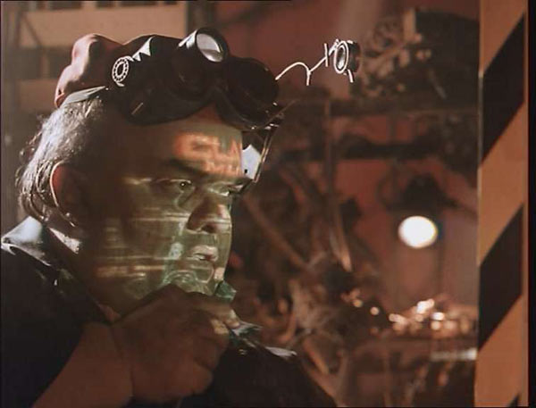

Movie review by : SFAM
Year : 1990
Directed by : Richard Stanley
Written by : Steve MacManus, Kevin O'Neill, Richard Stanley & Michael Fallon
Degree of Cyberpunk visuals : High
Correlation to Cyberpunk themes : High
Rating : 9/10
Key cast members :
Overview: Of all the movies I uncovered during my research for this list, Hardware far and above tops the list of movies I previously had no knowledge of. Put simply, Hardware is absolutely AWESOME low budget cinema. This cross between Alien and the Terminator is set in a totally weird cyberpunk dystopia. It's scary as shit, it's totally weird, and DAMN it's good!
Filmed for only one million dollars, Hardware takes place in a truly bizarre dystopic future where a nomadic "parts" scavenger goes into a barren wasteland called the "zone" and finds a strange and seemingly valuable robot head and body parts. Through unfortuitous circumstances, this head finds its way back to a hot looking babe named Jill, an artsy-fartsy type (played wonderfully by Stacey Travis) who accepts it as a gift. She decorates the head with cool colors and stuff and sticks it on her shelf.
Unfortunately for her, it turns out this head and body parts make up the bulk of the government's new prototype Mark-13 droid - a true killer designed to weed out excess population, that's impervious to almost everything. Once this thing re-assembles itself, this thing begins its killing spree. On top of this, Hardware has some of the most eclectic collection of characters ever assembled. We have a totally slimy pervert that spends his time peeking in on Jill, especially when she's in the nude; we have a completely shady parts dealer, we have a zen-like unknown nomad, we have a completely weird boyfriend's sidekick, and some truly bizarre apartment tenants.

The Visuals: Like most cyberpunk films, there is one color that dominates the screen - in this case its orange. We get orange EVERYWHERE, along with a nice few accents of pale yellow. All the set pieces are totally futuristic and hip. We get fun advertisements on the radio, a totally hip atmosphere, and truly, one of the best soundtracks found in movies. Quite simply, Hardware ROCKS!
Now for the bad news - unless you're in region 2, you're screwed. I picked up a used VHS for about 17 bucks on ebay but still found it worth it. Unfortunately, this version is panned and scanned and cut. If I had obtained a "real" version of this movie, no doubt it would be sitting in my top 10.
The Bottom Line: Hardware is a terrific, low-budget cyberpunk flick - one of the best low budget cyberpunk movies ever. If you are looking for a great, futuristic terminator-style chase movie that takes place almost completely in a bizarre apartment building, this is your movie!